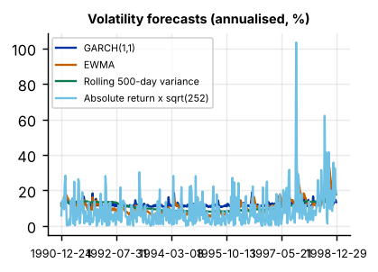

Run this model on your own data in Open Econometric Systems →
Step 1The question and the model
Which forecast of tomorrow's variance is best? Five forecasts of the one-day-ahead variance \(h_t\) are compared on the days after the first estimation window:
| Forecast | Definition |
|---|---|
| GARCH(1,1) | \(h_t = \omega + \alpha\varepsilon_{t-1}^2 + \beta h_{t-1}\), parameters from the first window |
| EWMA | \(h_t = \lambda h_{t-1} + (1 - \lambda)\varepsilon_{t-1}^2\), \(\lambda = 0.94\) |
| Rolling variance (window \(w\) and 25 days) | The sample variance of the previous \(w\) (or 25) returns |
| Constant | The variance of the first window |
The realised variance is not observed. The squared return \(\varepsilon_t^2\) is an unbiased but very noisy proxy. Patton (2011) showed that with a noisy proxy only some losses rank forecasts correctly, among them the QLIKE loss, \(\log h_t + \varepsilon_t^2/h_t\), and the squared error, \((\varepsilon_t^2 - h_t)^2\); the squared error is correct but dominated by a few extreme days. Two tests complete the comparison:
| Test | What it checks |
|---|---|
| Mincer-Zarnowitz regression | \(\varepsilon_t^2 = a + b\,h_t + u_t\): an unbiased forecast has \(a = 0\), \(b = 1\) |
| Diebold-Mariano (Diebold and Mariano 1995) | Whether the average loss of two forecasts differs, with a Newey-West variance for the serial correlation of the loss differences |
How to write it: the model
We compare out-of-sample one-day variance forecasts from a GARCH(1,1) estimated on the first 500 days, the RiskMetrics EWMA with decay 0.94, rolling 500-day and 25-day sample variances and a constant. The squared demeaned return is the variance proxy. Forecasts are ranked by the QLIKE loss and the squared error, bias is tested with Mincer-Zarnowitz regressions with Newey-West standard errors, and differences from the EWMA benchmark are tested with Diebold-Mariano statistics with 10 lags.
Step 2Load the data
import numpy as np
import pandas as pd
import oes_engine as oes # pip install -e open-econometric-systems/oes-engine
data = open("crspday.csv").read()
d = pd.read_csv("crspday.csv")
r = d.crsp
print(len(d), "days,", d.date.iloc[0], "to", d.date.iloc[-1])
print("daily s.d. %.3f%%; squared-return proxy: mean %.2e, but the largest value is %.0f times the mean" % (100 * r.std(), (r ** 2).mean(), (r ** 2).max() / (r ** 2).mean()))
print("autocorrelation of squared returns, lags 1-5:", [round(float(r.pow(2).autocorr(k)), 3) for k in range(1, 6)])2528 days, 1989-01-03 to 1998-12-31 daily s.d. 0.776%; squared-return proxy: mean 6.06e-05, but the largest value is 72 times the mean autocorrelation of squared returns, lags 1-5: [0.208, 0.152, 0.08, 0.115, 0.196]
How to read it
The squared return is a very noisy proxy for the variance: its mean is \(6.06 \times 10^{-5}\), and the largest value is 72 times the mean (the worst day of the sample, \(-6.6\)%). It is still informative: the autocorrelations of squared returns at lags 1 to 5 are 0.21, 0.15, 0.08, 0.12 and 0.20, the volatility clustering that the models exploit. There are 2,528 trading days, 2,028 of them forecast out of sample.
Step 3Forecast and compare the losses
spec = dict(y="crsp", time="date", window=500)
res = oes.run("vol_eval", data, spec)
oes.summary(res)
oes.show(res, "Out-of-sample loss")
oes.plot(res)Out-of-sample days: 2028
Best by QLIKE: EWMA
Benchmark: EWMA
Out-of-sample loss (2028 days, squared return as the volatility proxy)
MSE x 1e8 QLIKE R-squared of the Mincer-Zarnowitz regression
Forecast
GARCH(1,1) 3.3152 -8.8880 0.0870
EWMA 3.3190 -8.9368 0.0801
Rolling 500-day variance 3.4927 -8.8525 0.0309
Rolling 25-day variance 3.4246 -8.8857 0.0652
Constant (first window) 3.5892 -8.7322 0.0000
Note: Lower loss is better. QLIKE is the loss of Patton (2011) and is robust to the noise in the proxy.
How to read it
The EWMA has the lowest QLIKE loss (\(-8.937\)), followed by the GARCH(1,1) (\(-8.888\)), the 25-day variance (\(-8.886\)), the 500-day variance (\(-8.853\)) and the constant (\(-8.732\)); the summary reports the best forecast by QLIKE. The squared-error losses (MSE) of the GARCH and the EWMA are almost identical (3.315 and 3.319, in units of \(10^{-8}\)) and the others are higher (3.42 to 3.59). The R-squared of the Mincer-Zarnowitz regression is small for every forecast (at most 0.087) because the proxy is noisy, so the ranking matters more than the level. The chart compares the volatility forecasts (annualised, in percent) with the absolute return.
Step 4Are the forecasts unbiased?
oes.show(res, "Mincer-Zarnowitz")Mincer-Zarnowitz regressions: squared return on the forecast
Intercept s.e. Slope s.e. Wald: intercept 0 and slope 1 p
Forecast
GARCH(1,1) -4.0000e-05 1.1000e-05 1.5529 0.2026 18.0651 0.0001
EWMA 1.3000e-05 6.0000e-06 0.7881 0.1510 5.6156 0.0603
Rolling 500-day variance -1.2000e-05 1.4000e-05 1.4218 0.3711 2.1302 0.3447
Rolling 25-day variance 2.2000e-05 6.0000e-06 0.6417 0.1395 15.2081 0.0005
Constant (first window) NaN NaN NaN NaN NaN NaN
Note: Newey-West standard errors, 10 lags. An unbiased forecast has intercept 0 and slope 1.How to read it
An unbiased forecast has intercept 0 and slope 1 in the regression of the squared return on the forecast. The EWMA has a slope of 0.79 (standard error 0.15) and the joint test does not reject at 5% (p = 0.060). The GARCH(1,1) has a slope of 1.55 (0.20) and a negative intercept: a joint rejection (p = 0.0001), because its parameters were fixed on the first 500 days and the persistence of volatility changed afterwards. The 25-day variance has a slope of 0.64 (0.14) and is rejected (p = 0.0005): it reacts too strongly to the latest days, so its forecasts are more dispersed than the true variance. The 500-day variance has a slope of 1.42 (0.37) but a wide interval and is not rejected (p = 0.34), which is low power more than evidence of unbiasedness. The constant has no variation to regress on.
Step 5Are the differences significant?
oes.show(res, "Diebold-Mariano")Diebold-Mariano tests against EWMA
QLIKE: DM p MSE: DM p
Forecast
GARCH(1,1) 1.7552 7.9222e-02 -0.0638 0.9491
Rolling 500-day variance 1.8853 5.9395e-02 1.2187 0.2230
Rolling 25-day variance 4.0003 6.3000e-05 2.3953 0.0166
Constant (first window) 3.3655 7.6400e-04 1.6407 0.1009
Note: A negative statistic means the forecast has a smaller loss than the benchmark. Newey-West with 10 lags.How to read it
Against the EWMA, a positive statistic means a larger loss. On QLIKE the constant (3.37, p < 0.001) and the 25-day variance (4.00, p < 0.001) are clearly worse, the GARCH (1.76, p = 0.079) and the 500-day variance (1.89, p = 0.059) are worse at the 10% level only. On the squared error, which is dominated by a few days, only the 25-day variance differs significantly from the EWMA (2.40, p = 0.017). The two losses agree that the 25-day and constant forecasts are not better, and disagree about the others because the squared error has almost no power against the larger days; this is the reason to prefer QLIKE.
Step 6Robustness: the window and the benchmark
for w in (250, 1000):
rw = oes.run("vol_eval", data, dict(spec, window=w))
print(f"--- window {w}: {rw['nobs']} forecasts")
for row in rw["tables"][0]["rows"]:
print(f" {row[0]:28s} QLIKE {row[2]:8.4f} MSE x 1e8 {row[1]:9.1f}")
rg = oes.run("vol_eval", data, dict(spec, benchmark="GARCH(1,1)"))
oes.show(rg, "Diebold-Mariano")--- window 250: 2278 forecasts
GARCH(1,1) QLIKE -8.6898 MSE x 1e8 3.5
EWMA QLIKE -8.8830 MSE x 1e8 3.2
Rolling 250-day variance QLIKE -8.8410 MSE x 1e8 3.4
Rolling 25-day variance QLIKE -8.8318 MSE x 1e8 3.4
Constant (first window) QLIKE -8.6546 MSE x 1e8 3.5
--- window 1000: 1528 forecasts
GARCH(1,1) QLIKE -8.8986 MSE x 1e8 4.1
EWMA QLIKE -8.9456 MSE x 1e8 4.1
Rolling 1000-day variance QLIKE -8.6843 MSE x 1e8 4.4
Rolling 25-day variance QLIKE -8.8881 MSE x 1e8 4.2
Constant (first window) QLIKE -8.6811 MSE x 1e8 4.4
Diebold-Mariano tests against GARCH(1,1)
QLIKE: DM p MSE: DM p
Forecast
EWMA -1.7552 0.0792 0.0638 0.9491
Rolling 500-day variance 0.8451 0.3981 1.4761 0.1399
Rolling 25-day variance 0.0667 0.9468 1.4234 0.1546
Constant (first window) 3.2686 0.0011 1.9911 0.0465
Note: A negative statistic means the forecast has a smaller loss than the benchmark. Newey-West with 10 lags.How to read it
With a 250-day window the GARCH, whose parameters come from only 250 observations, is much worse (QLIKE \(-8.690\) against \(-8.883\) for the EWMA) and the 250-day variance is at \(-8.841\); with a 1,000-day window the EWMA is still the best (\(-8.946\)), followed by the GARCH (\(-8.899\)) and the 25-day variance (\(-8.888\)), and the 1,000-day variance and the constant are the worst (\(-8.684\) and \(-8.681\)). Taking the GARCH as the benchmark, the EWMA is better (DM \(-1.76\), p = 0.079), the constant is worse (3.27, p = 0.001 on QLIKE; p = 0.047 on the squared error), and the 500-day and 25-day variances do not differ (p = 0.40 and 0.95). The EWMA has no parameters to estimate, which is why it is hard to beat in a sample with a structural change.
Step 7Diagnostics: does QLIKE pick the right model?
def garch_t(n, seed):
rng = np.random.default_rng(seed); x = np.empty(n); s2 = 1.0
for t in range(n):
x[t] = np.sqrt(s2) * rng.standard_t(6) * np.sqrt(4 / 6)
s2 = 0.05 + 0.08 * x[t] ** 2 + 0.9 * s2
return x
wins = {}
for s in range(20):
x = garch_t(3000, s)
rs = oes.run("vol_eval", pd.DataFrame(dict(t=range(len(x)), x=x)).to_csv(index=False), dict(y="x", time="t", window=600))
q = {row[0]: row[2] for row in rs["tables"][0]["rows"]}
wins[min(q, key=q.get)] = wins.get(min(q, key=q.get), 0) + 1
print("forecast with the lowest QLIKE in 20 simulated GARCH samples:", wins)forecast with the lowest QLIKE in 20 simulated GARCH samples: {'GARCH(1,1)': 15, 'EWMA': 5}How to read it
In 20 simulated series from a GARCH(1,1) with t(6) errors (3,000 days, window 600) the GARCH has the lowest QLIKE in 15 samples and the EWMA in the other 5, and no other forecast is ever the best: the loss ranks the true model first most of the time even with a squared-return proxy and a short window, but not always. With 5 samples in 20 going to the EWMA, a single sample of real data can reverse the ranking, which is why the Diebold-Mariano p-values should be read with the losses. The tests check the QLIKE and squared-error computations against a manual calculation, the Mincer-Zarnowitz slope of a correct GARCH forecast on simulated GARCH data and that the Diebold-Mariano test sides with the better forecast.
Step 8Write the results
How to write it: results
We compare five one-day variance forecasts of the CRSP market index on 2,028 out-of-sample days (December 1990 to December 1998), using the squared return as the proxy. The EWMA (decay 0.94) has the lowest QLIKE loss (\(-8.937\)); the GARCH(1,1) estimated on the first 500 days follows (\(-8.888\)), then the 25-day variance (\(-8.886\)), the 500-day variance (\(-8.853\)) and a constant (\(-8.732\)). Against the EWMA, the constant and the 25-day variance are significantly worse (Diebold-Mariano p < 0.001), the GARCH and the 500-day variance are worse at the 10% level (p = 0.079 and 0.059). Mincer-Zarnowitz regressions reject unbiasedness for the GARCH (slope 1.55, p = 0.0001) and the 25-day variance (slope 0.64, p = 0.0005) and not for the EWMA (slope 0.79, p = 0.060). The ranking is the same with a 1,000-day window; with 250 days the GARCH is much worse. In simulations from a GARCH the true model has the lowest QLIKE in 15 of 20 samples.
References. Patton (2011), Journal of Econometrics; Diebold and Mariano (1995), Journal of Business and Economic Statistics; Mincer and Zarnowitz (1969); Andersen and Bollerslev (1998), International Economic Review; Hansen and Lunde (2005), Journal of Applied Econometrics; Bollerslev (1986), Journal of Econometrics; J.P. Morgan (1996), RiskMetrics Technical Document.